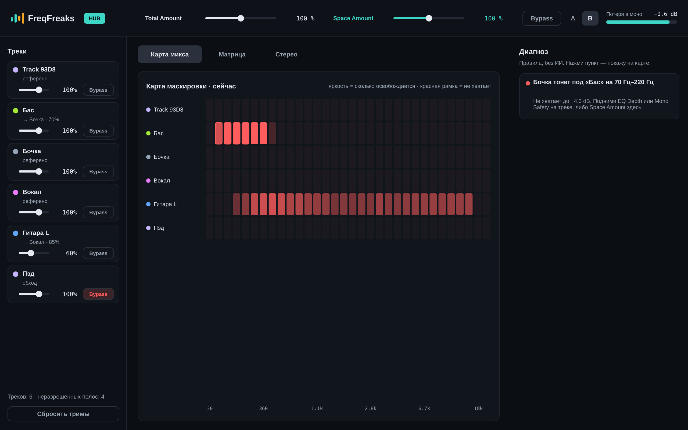

Версия 0.3 · бесплатно, открытый код (GPLv3) · для сведения, не для живого звука
Что делает. FreqFreaks освобождает место в миксе: трек сам уступает частоты тому треку, который важнее (гитара — вокалу, бас — бочке). Без роутинга сайдчейна: экземпляры плагина видят друг друга сами. Освобождение двумя способами: Space уводит мешающие частоты из центра в стороны, не теряя энергию, а EQ аккуратно вырезает остаток.
| Система | Куда скопировать |
|---|---|
| Windows (VST3) | FreqFreaks Track.vst3 и FreqFreaks Hub.vst3 → C:\Program Files\Common Files\VST3 |
| Mac (VST3) | оба .vst3 → /Library/Audio/Plug-Ins/VST3 |
| Mac (AU, Logic) | оба .component → /Library/Audio/Plug-Ins/Components |
Track и Hub всегда из одной сборки. Если версии разные, они не видят друг друга (Hub пустой, на треках «Hub не найден»).
Mac: плагин не подписан Apple. Если macOS его блокирует, один раз выполни в Терминале:
sudo xattr -dr com.apple.quarantine /Library/Audio/Plug-Ins/VST3/FreqFreaks*
(для AU — то же с папкой Components). Потом пересканируй плагины в DAW.
Начинай с настроек по умолчанию: они подобраны так, чтобы звучать незаметно. Лучший тест — переключить A/B и послушать, стал ли вокал разборчивее, а гитара не «провалилась».

Окно Track в режиме Expert. Наведи мышь на любую ручку — в блоке «Подсказка» справа внизу появится, что она делает.
| Имя и цветная точка | Берутся из DAW (в Studio One — автоматически, и меняются при переименовании). Клик по имени — своё имя, клик по точке — свой цвет. |
| Динамик | Прослушка. Клик — Delta: слышно только то, что плагин убрал. Правый клик — меню: Δ только EQ, Δ только Space, вход без обработки, референс, трек + референс. |
| Уступает | Трек-референс, которому этот трек освобождает место. |
| A / B | A — без обработки (с той же задержкой), B — с обработкой. |
| Simple / Detail / Expert | Сколько показывать: только главное → плюс спектр → все настройки. |
| Amount | Сколько места освобождать. 0–100%, по умолчанию 70%. |
| Space Amount | Доля стерео-раздвижки. 100% — выбор плагина, 0% — только EQ (карточка Space в Expert бледнеет), до 200% — шире. |
| Link | EQ добирает то, что не успел Space. Обычно включён. |
| Скорость | Rider — плавно, по фразам; Duck — быстро, по нотам. |
| Атака / Релиз | Кольцо на спектре: внутри Release, ободок Attack. «auto» — следуют за Скоростью. Потяни — станут ручными, двойной клик — снова авто. |
| Sharp | Ширина вырезов. 0% — как задумано изначально: широкие плавные полосы. До 50% — уже. Выше 50% — узкий режим: до 8 узких колоколов встают точно на конфликты (как Soothe / Pro-Q). Точнее, но может звучать резче. |
| Режим Space | Spread — в стороны; Pan Away — влево или вправо; Decorrelate — расширяет моно-источник. |
| Output · Auto · Space comp | Output — поправка ±12 дБ. Space comp держит громкость, когда крутишь Space Amount. Auto возвращает громкость, которую трек потерял от освобождения (честное A/B). |
| EQ · частоты | Янтарные края Range тянутся мышью: вне них плагин ничего не трогает (по умолчанию 60 Гц – 14 кГц). Depth — самый глубокий вырез EQ (по умолчанию 6 дБ). |
| Space · стерео | Бирюзовая граница Bass Mono: ниже неё Space не работает, низ остаётся в моно (по умолчанию 150 Гц). Mono Safety — сколько Space может увести из центра. |
| Чувствительность | Насколько сильно референс должен перекрываться, чтобы плагин начал уступать. |
Окно меняет размер за правый нижний угол (60–200%). Клик по логотипу — меню размеров и «О плагине и лицензия».

Hub на мастере: слева уступающие треки, в центре карта маскировки, справа диагноз.
| Total Amount / Space Amount | Умножают Amount и Space Amount сразу на всех треках. |
| Bypass · A / B | Выключить FreqFreaks во всём проекте / сравнить весь микс до и после. |
| Потеря в моно | Насколько тише станет микс при сведении в моно. |
| Треки (слева) | Только те, что уступают. Трим 0–150% — больше / меньше подавления на треке, Bypass — выключить его. Двойной клик — панель с ручками этого трека. Проблемные — сверху, с красной рамкой. «Компактно» — в одну строку. Список прокручивается. |
| Карта микса | Строка = трек, клетка = полоса частот. Чем ярче, тем больше освобождается; красная рамка — не хватает. Слева на строке — сколько трек отдаёт сейчас («−5 дБ»), справа — от кого. |
| Матрица · Стерео | Кто кому уступает (все треки, включая референсы) и где что стоит в стерео. |
| Диагноз | Советы по правилам. Карточка держится, пока есть проблема, и пропадает, когда всё пришло в норму. Клик по ней — покажет место на карте. |
Если диагноз пишет «давить сильнее не стоит» — трек уже отдаёт много. Не увеличивай Amount: лучше разведи два инструмента вручную (каждому — своя частота) или реши, кто главный в этом диапазоне.
| Гитары / клавиши → вокал | Amount 60–80%, Space Amount 100%, Sharp 0%. Голос выходит вперёд, инструменты уходят в стороны. |
| Бас → бочка | Amount 30–50%, Скорость ближе к Duck. Ниже Bass Mono работает только EQ — не дави сильно, иначе бас пропадёт. |
| Пэды, струнные → всё важное | Space Amount 120–150%: широкий фон, чистый центр. |
| Резкий резонанс мешает вокалу | Sharp 60–80%: узкие вырезы точно в месте конфликта. |
| «Hub не найден» | Hub не стоит на мастере, или Track и Hub из разных сборок. Без Hub треки работают как обычно. |
| Нет имени трека | Кликни по имени и впиши своё. В Expert видно, что передала DAW. |
| Задержка | 30 мс упреждения: плагин уступает заранее, до атаки референса. DAW компенсирует её сама. |
| Нагрузка | ~1–3% одного ядра на трек при 48 кГц. Работает и на 44,1–192 кГц. |
| Звук изменился после обновления? | При Sharp 0% обработка совпадает с прежними версиями до бита — это проверяет автотест. |
FreqFreaks — Moon Audio Engineering. Бесплатно, GNU GPL v3 или новее, без гарантий. Сделано на JUCE 8 (AGPLv3). Исходный код: github.com/AlLayan-cyber/Freqfreaks